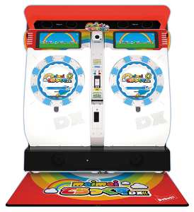
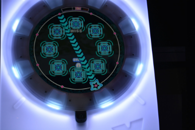
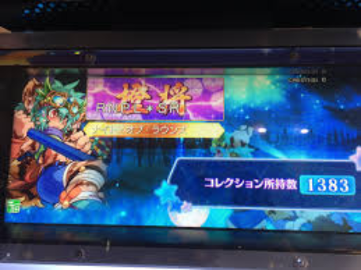
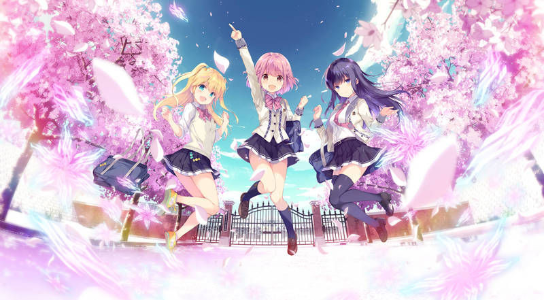
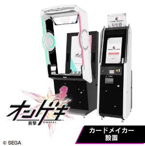
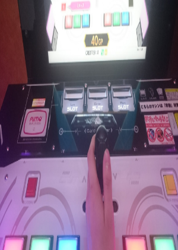

このページでは普段私が遊んでいるSEGAの音ゲーを2つほど紹介する



2012/07/11に稼働開始され今年で七年半を迎えるSEGAの代表的音ゲー。とはいっても私もこのゲームを始めて大体２年ほどである。
アーケードゲームとしてはとてもユニークな「ドラム式洗濯機」を彷彿とさせる形の筐体が特徴。筺体1つにつき2人までプレイすることが可能である。遊び方は簡単で画面中央から外に向かうマーカーが画面縁の枠に重なるタイミングでリズムよく対応するボタンを押すか、その部分をタッチするという音ゲーである。
初心者から上級者まで楽しめるが楽曲はアニソンやオリジナル楽曲、またSEGAの楽曲があるのが特徴。さらに上画面で自分の好きなようにフレームやアイコンなどを設定できてた※右上参照(今はできない模様....)
参考動画(プレイ動画)
The Gong of Knockout AP動画(Youtube)
異世界かるてっと AP動画(Youtube)



2018/7/26稼働開始。今年で1年半になる。ちなみに稼働初日から遊んでいる
このゲームは他の音ゲーとは少し違いノーツだけでなく、ライフやシューティングゲームに似た要素などがあり音ゲーではレバーがあるという少し変わったものである。そのうえ操作するキャラが可愛い可愛いキャラなのでその影響ではまった人が多い(自分も同じ)
これもmaimaiとおなじくアニソンやオリジナル楽曲、またSEGAの楽曲があるのが特徴。またオンゲキのキャラクターもおりその影響で結構人気の音ゲーである。
参考動画(プレイ動画)
Calamity fortune ABFB動画(youtube)